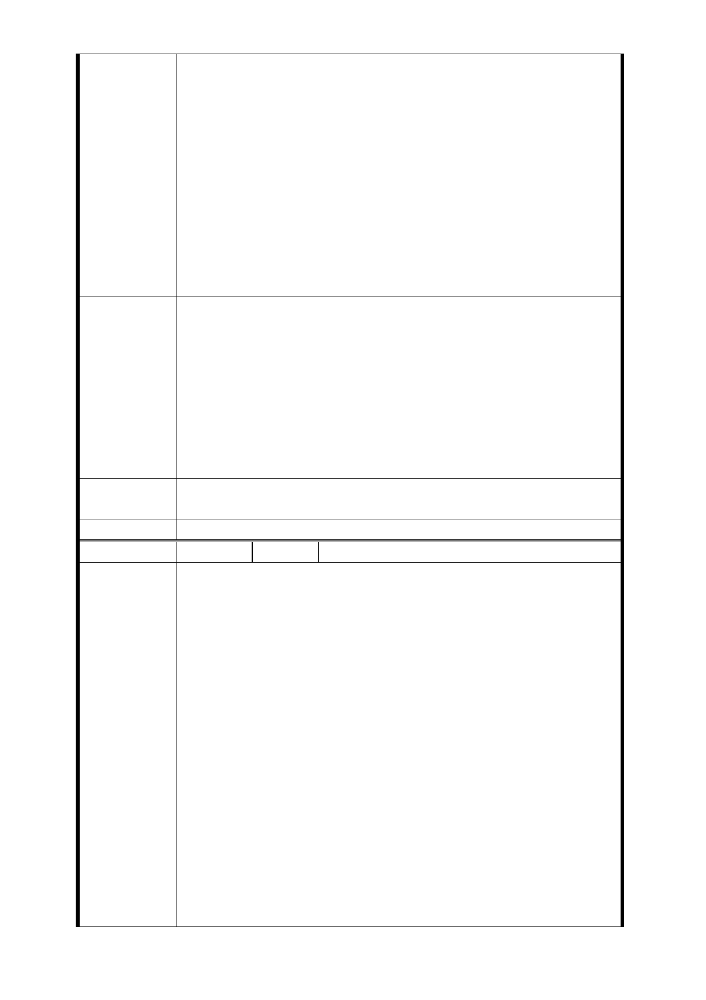

後屋齡達 30 年以上的南門市場。本次的土地徵收與聯合開
發，應考量 TOD 中土地最高效用的原則，結合南門市場、行
政區公所中心以及場站三合一考量，配合都市更新重新規劃
己達三＋年（已屆滿都市更新年齡之公共設施）之南門市場，
不應先考量私有土地進行徵收 · 因此，在細部計畫劃設，應
將 LG01 場站設置於南門市場以符合 TOD 以及都市更新之原
則。
3.財務評估之不明確：都市計畫書中財務評估表將 LG01、
LG02、LG03、LG04 等四個場站所需開發的聯合開發區 〈 即
表中所述土地開發區「捷」）綜合敘述其所需的土地徵購費用
。其敘述方式不明卻無法確切了解各個場站以及其土地所需
的工程費、土地徵購費以及地上物補償費，應退回 。
1.建議計畫單位，應明確標示 LG01 面南海路的人行道留設空
間以及騎樓規劃以做未來規畫之準則，否則其可能違反 TOD
原則。
2.建議計畫單位，應優先採用符合 TOD 精神且已達都市更新
建 議 辦 法 標準之公共設施土地「南門市場」，否則未來南門市場與該捷
運場站將無法連結，造成不必要的公共設施浪費。
3.建議計畫單位，財務評估應退回將每一個開發土地所需的
土地徵購費、地上物補償費以及工程費個別列出以明確財務
規劃、確保財務可行性。
市府回應
意見
同編號捷四-3 回應意見。
委員會決議 同編號交一－1 委員會決議。
編 號 捷四-3C 陳情人 李蔡○玉、張鄧○妹（101.4.16）
主旨：為避免臺北市捷運萬大－中和－樹林線規劃便宜行事
，強搶民地，罔顧人民權益，踐踏居住正義，請重新審視 LG01
車站計畫並變更設計，請查照。
說明：
一、有關臺北市政府捷運局萬大線 LG01 站係以南海路羅斯福
路交接處為端點，並與中正紀念堂站交會轉乘。該車站設施
設置 2 處出入口，其一出入口用地為保六總隊辦公廳之空地
；而另一出入口用地卻強行規劃三戶獨立產權透天厝（呈凸
陳情理由
狀）當出口，設計明顯有誤，且離譜的是南海路此段始自南
門市場終至市警局止，頭、尾臨十字路口均屬市有土地不思
規劃，竟規劃從一條路的中間最好拆的三戶獨立厝當出口，
致整片土地呈凸狀，非常不合理，懇請明察。
二、推動公共建設，繁榮都市，是市民之福。但土地的取得
應優先考量公有土地或公有機關，人民的財產應受到最高的
保護，非萬不得已，絕不可以便宜行事，擅搶民產，圈地自
肥。人民的土地是辛苦血汗換來的，應受到憲法的保障，維
護人權與居住正義，保障人民身家財產是民主法治國家所當
為，也是政府應盡的職責，擅拆民宅，擅搶民地，無異行政
- 24 -